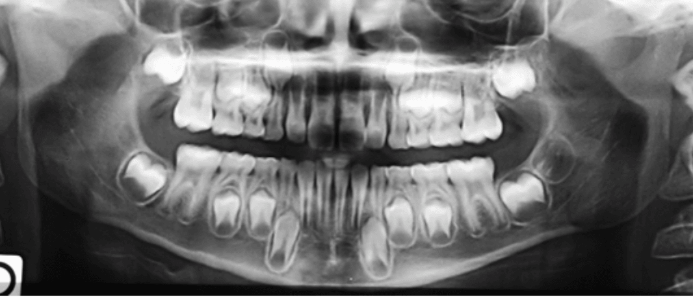
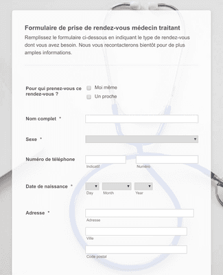

Les dents infero-anterieur ont une légère mobilité et sont douloureuses depuis quelques jours.
Examen clinique
L’améloblastome est la tumeur odontogène la plus fréquente dans les pays en voie de développement et occupe la 2ème place après lves odontomes dans les pays développés. Elle a été classée cliniquement en 3 groupes par l’OMS en 2017. La prise en
charge de l’améloblastome est compliquée par le taux de récidive important associé à un traitement conservateur.
Examen complémentaires
.Scanner

L’améloblastome est la tumeur odontogène la plus fréquente dans les pays en voie de développement et occupe la 2ème place après lves odontomes dans les pays développés. Elle a été classée cliniquement en 3 groupes par l’OMS en 2017. La prise en
charge de l’améloblastome est compliquée par le taux de récidive important associé à un traitement conservateur.
.Biopsy

L’améloblastome est la tumeur odontogène la plus fréquente dans les pays en voie de développement et occupe la 2ème place après lves odontomes dans les pays développés. Elle a été classée cliniquement en 3 groupes par l’OMS en 2017. La prise en
charge de l’améloblastome est compliquée par le taux de récidive important associé à un traitement conservateur.
Diagnostic
Le diagnostic histopathologique était un améloblastome folliculaire kystique par place. Le contrôle à 10 jours montrait une bonne cicatrisation. Les examens clinique et radiologique de contrôle à 3 mois démontraient une crête alvéolaire saine
(Fig 6) et un début de reminéralisation osseuse au niveau du site de la lésion (Fig 7).
Pathologie diagnostiquée :
Carie
Périe-implantite
Examen clinique
L’améloblastome est la tumeur odontogène la plus fréquente dans les pays en voie de développement et occupe la 2ème place après lves odontomes dans les pays développés. Elle a été classée cliniquement en 3 groupes par l’OMS en 2017. La prise en
charge de l’améloblastome est compliquée par le taux de récidive important associé à un traitement conservateur.
Conclusion
L’améloblastome est la tumeur odontogène la plus fréquente dans les pays en voie de développement et occupe la 2ème place après lves odontomes dans les pays développés. Elle a été classée cliniquement en 3 groupes par l’OMS en 2017. La prise en
charge de l’améloblastome est compliquée par le taux de récidive important associé à un traitement conservateur.